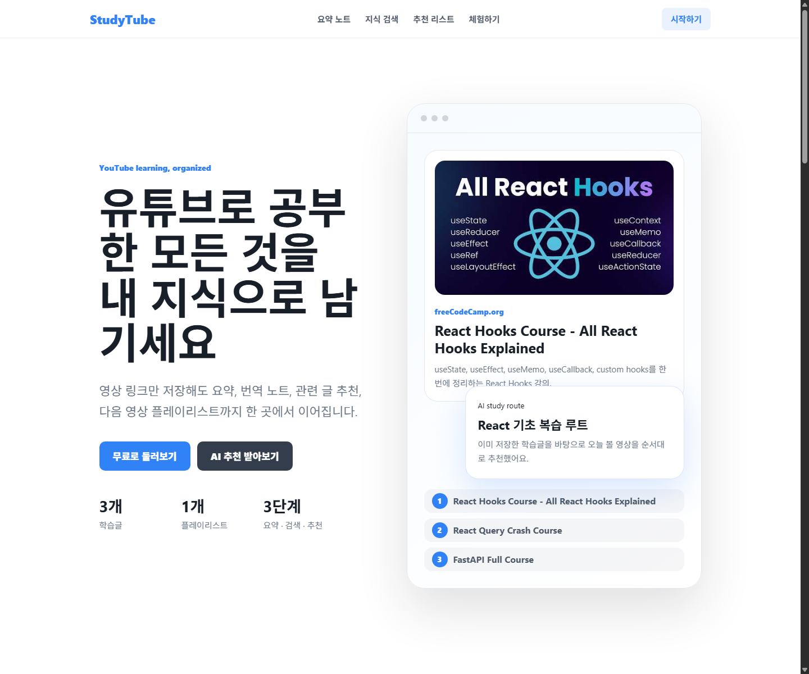
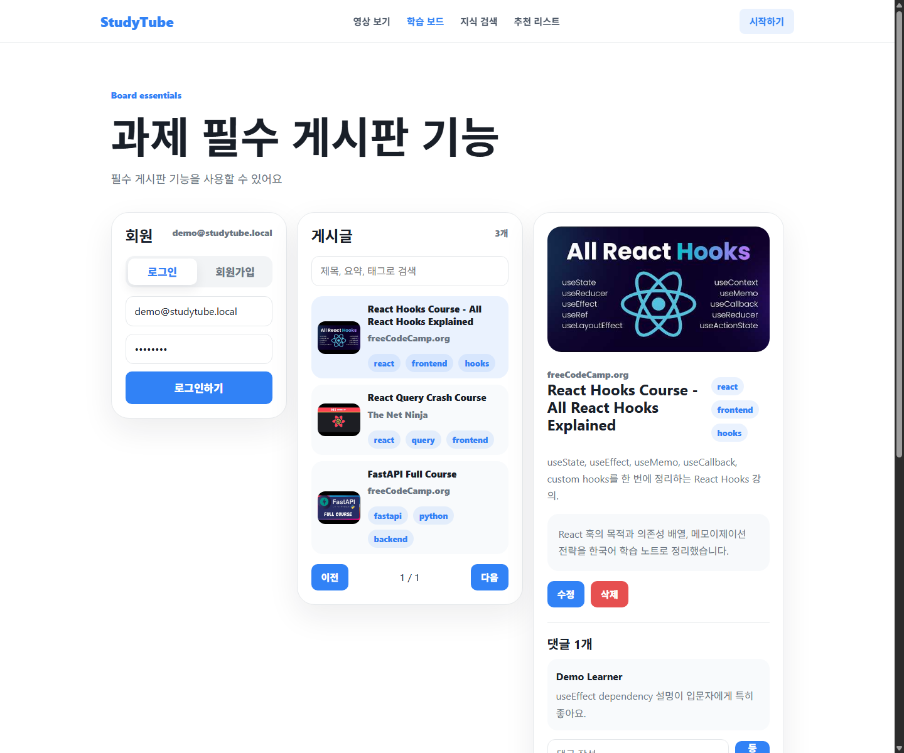
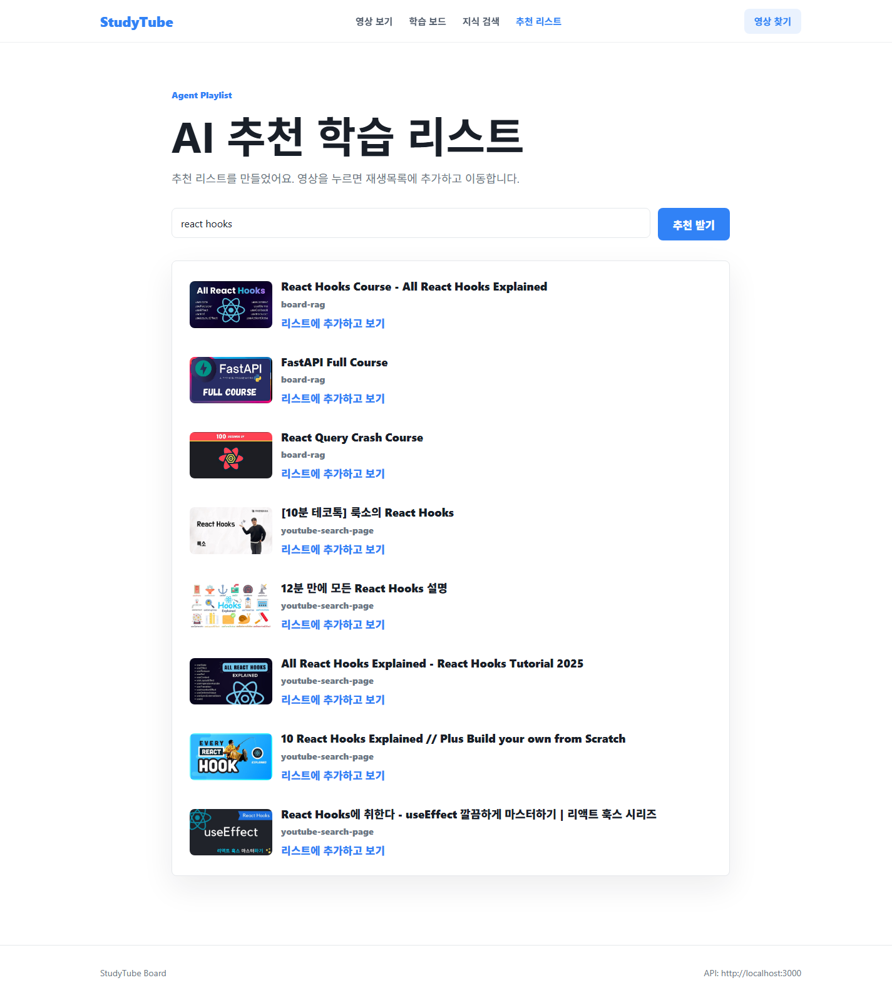
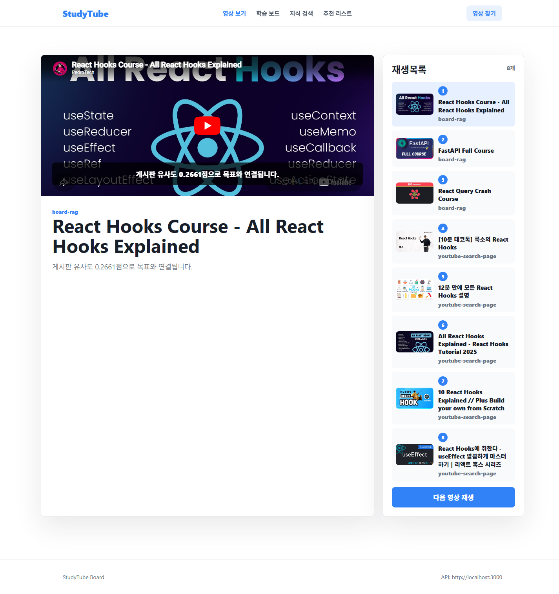
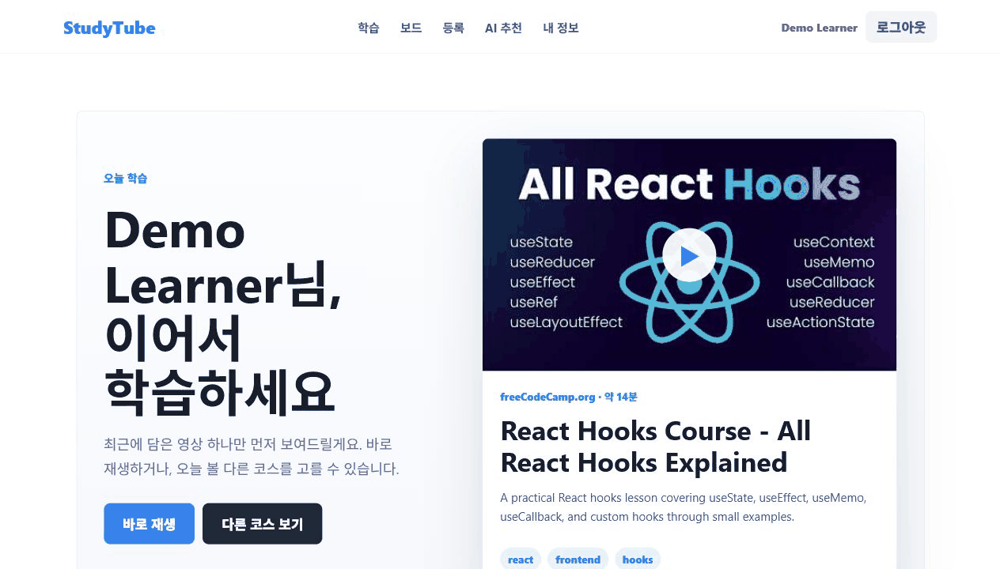

YouTube URL을 넣으면 제목, 채널, 썸네일, 태그를 자동으로 채웁니다.
무엇을 만드는 서비스인가
영상 하나를 저장하는 게시판이 아니라, 학습 흐름을 공유하는 코스 서비스
영상 맥락과 자막을 기반으로 학습용 요약 노트를 만듭니다.
여러 영상을 순서 있는 플레이리스트로 묶고 공개 보드에 공유합니다.
재생목록, 구간 메모, 반복 재생, AI 자막을 한 화면에서 사용합니다.
좋아하는 영상 링크를 넣으면 AI가 요약하고, 사용자는 여러 영상을 순서 있는 플레이리스트로 묶어 함께 학습합니다.
YouTube URL을 넣으면 제목, 채널, 썸네일, 태그를 자동으로 채웁니다.
영상 맥락과 자막을 기반으로 학습용 요약 노트를 만듭니다.
여러 영상을 순서 있는 플레이리스트로 묶고 공개 보드에 공유합니다.
재생목록, 구간 메모, 반복 재생, AI 자막을 한 화면에서 사용합니다.
YouTube에는 강의가 많지만, 학습 목표에 맞는 순서와 맥락은 흩어져 있습니다. StudyTube는 좋은 영상, 요약, 추천 경로를 하나의 학습 보드로 모읍니다.
검색 결과는 풍부하지만 입문, 복습, 심화 순서를 직접 판단해야 합니다.
URL을 넣으면 AI가 요약과 태그를 채워 학습 가능한 단위로 바꿉니다.
개인의 좋은 학습 루트를 다른 사람도 따라갈 수 있는 코스로 만듭니다.
레퍼런스는 좋아하는 YouTube 링크를 넣고 AI 문장해석, 쉐도잉, 요약 퀴즈로 학습하는 흐름을 강조합니다. StudyTube는 이 방향을 확장해 개인 학습을 공개 코스와 추천 보드로 연결합니다.
학습자가 이미 보고 싶은 영상에서 시작하도록 진입 장벽을 낮춥니다.
요약된 영상을 플레이리스트로 묶어 다른 사용자도 따라갈 수 있게 합니다.
레퍼런스의 명확한 메시지와 앱의 파란 카드형 학습 패널을 결합합니다.
YouTube 링크를 입력해 학습 재료를 만듭니다.
제목, 채널, 썸네일, 후보 영상을 가져옵니다.
영상 맥락과 자막을 학습용 노트로 압축합니다.
기존 자료를 찾고 부족하면 새 코스 초안을 만듭니다.
자막, 구간 반복, 메모와 함께 영상을 시청합니다.




원본 자막은 있었지만 전체 영상을 한 번에 번역하려 하면서 첫 화면에 필요한 한국어 자막이 제때 도착하지 않았습니다.

긴 영상 자막을 작은 playback window로 나눠 점진적으로 처리보드, 코스 찾기, 학습 플레이어, 자막 UI를 담당합니다.
localhost:5173인증, 게시글, 댓글, 태그, 플레이리스트, AI proxy를 제공합니다.
localhost:3000게시판 데이터와 post embedding을 저장해 RAG 검색에 사용합니다.
post_embeddingsRAG retrieval, MCP JSON-RPC, bounded Agent loop, 자막 번역을 처리합니다.
localhost:8000RAG, MCP, Agent를 각각 분리해 과제 요구사항을 충족하면서도, 실제 사용자가 이해할 수 있는 학습 흐름으로 묶었습니다.
영상 등록, 요약, 검색, 추천, 재생까지 연결했습니다.
자막 번역 문제를 playback window 단위로 해결했습니다.
embedding background job, LangGraph agent, rate limit을 강화합니다.